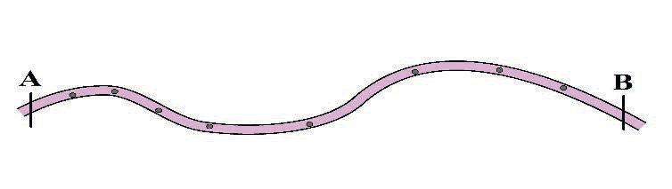
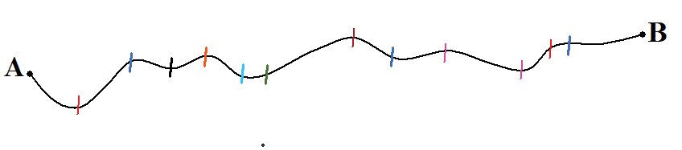

Measurement of curved distance
To measure the distance of curved features such as rivers, roads, or railways, tools like a pair of dividers, a piece of paper, thread or string, and scale are used.
The following steps are involved to determine a curved distance on a map using a string:
(a) Identify the two points connected by a curved line.For example, points A and B then divide the distance that needs to be measured into shorter, straight segments and mark them as shown in Figure 13.

(b) Take the thread and tie a knot at one end on the left side, then lay it along the curved line connecting the two points by tracing the shorter divided segments, and mark the thread towards the other end, tie another knot at the last mark where point B is ended as shown in Figure 14.

(c) Use a linear scale to convert map distance to real distance on the ground as follows: